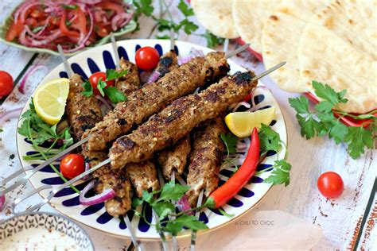

Turkey Kofta Kebab

Description
If you're looking for something different to make at your next BBQ, give
these Middle Eastern inspired turkey kebabs a try! A cross between a
grilled meatball and a hamburger on a stick. You can skip the stick if you
wish or even cook them in a skillet, but with Memorial Day around the
corner, I thought these would be fun!
Ingredients
- 1 pound ground turkey
- 1 small onion, minced
- 2 cloves garlic, minced
- ¼ cup chopped fresh cilantro
- 1 egg
- ¼ teaspoon chopped green chile pepper
- ¼ teaspoon ground coriander
- ¼ teaspoon ground paprika
- ¼ teaspoon chili powder
- salt to taste
Steps
- Preheat grill for medium heat and lightly oil the grate.
-
Combine ground turkey, onion, garlic, cilantro, egg, chile pepper,
coriander, paprika, chili powder, and salt together in a large bowl; mix
thoroughly.
-
Divide turkey mixture into twelve 1/4-cup portions, roll into log-shaped
ovals, and place on a baking sheet.
-
Grill ovals over indirect heat on middle rack, turning occasionally,
until no longer pink in the center, 25 to 30 minutes. An instant-read
thermometer inserted into the center should read at least 165 degrees F
(74 degrees C).